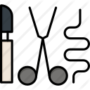

VETERINARIA MIS
4 PATAS
Emergencia las 24 horas
Unidad de Video Endoscopia Diagnóstica y Terapéutica
Somos los pioneros, con mas de 12 años de experiencia ofreciendo el servicio de endoscopia diagnostica y terapéutica para caninos, felinos y animales silvestres
Unidad de cirugía Mínima Invasión Laparoscópica
Ofrecemos el servicio de Cirugáa de mínima Invasión Laparoscópica, a través de un staff de médicos altamente calificados, infraestructura y equipamientos de ultima generación
Unidad de medicina Reproductiva y banco de Semen
Contamos con los últimos protocolos diagnósticos y terapéuticos para el manejo de las enfermedades que afectan el sistema reproductor de nuestras mascotas. Y desde hace dos años venimos ofreciendo el servicio de congelamiento de semen, bajo los protocolos de CLONE USA.